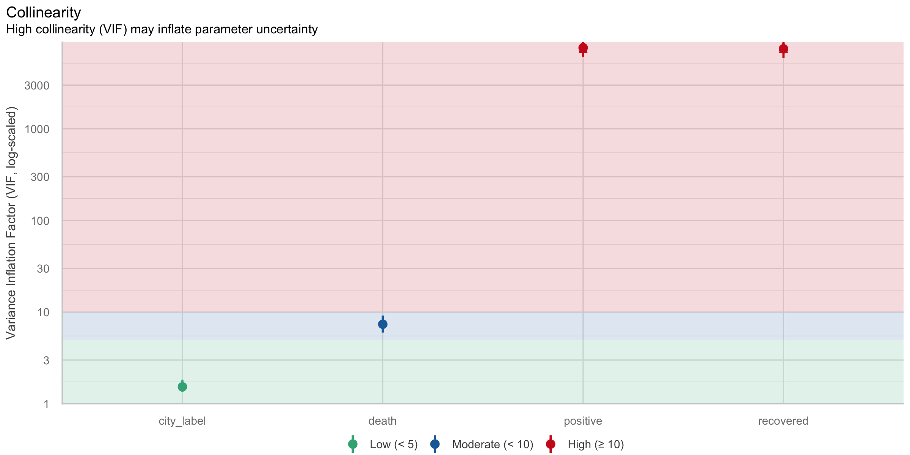
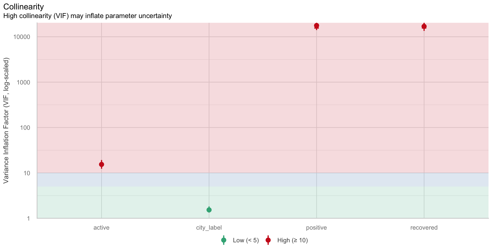
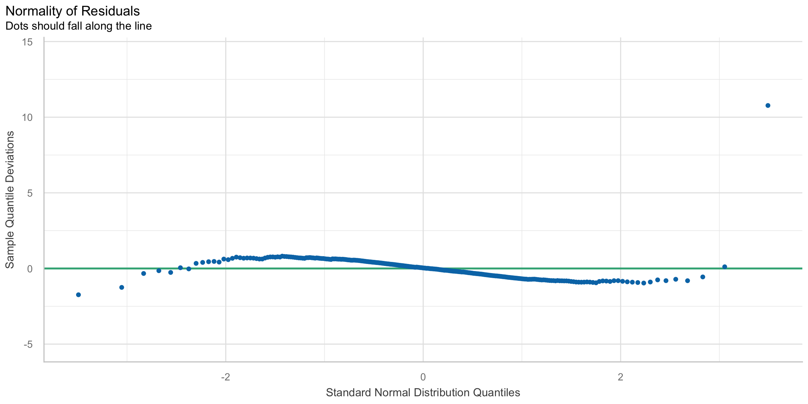
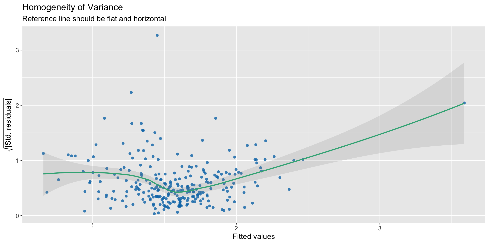
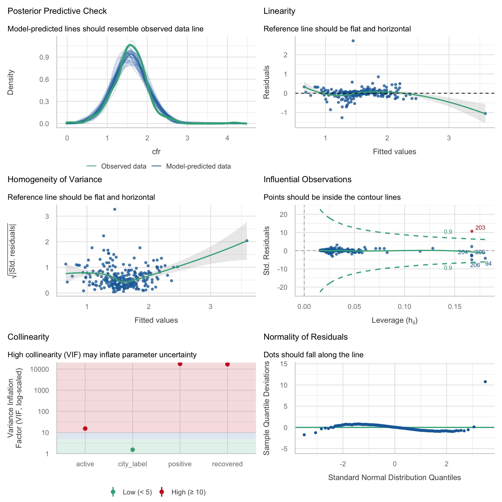
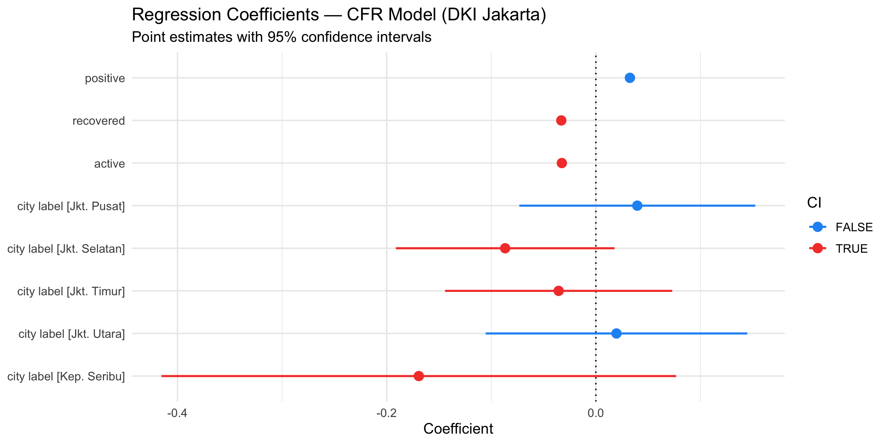
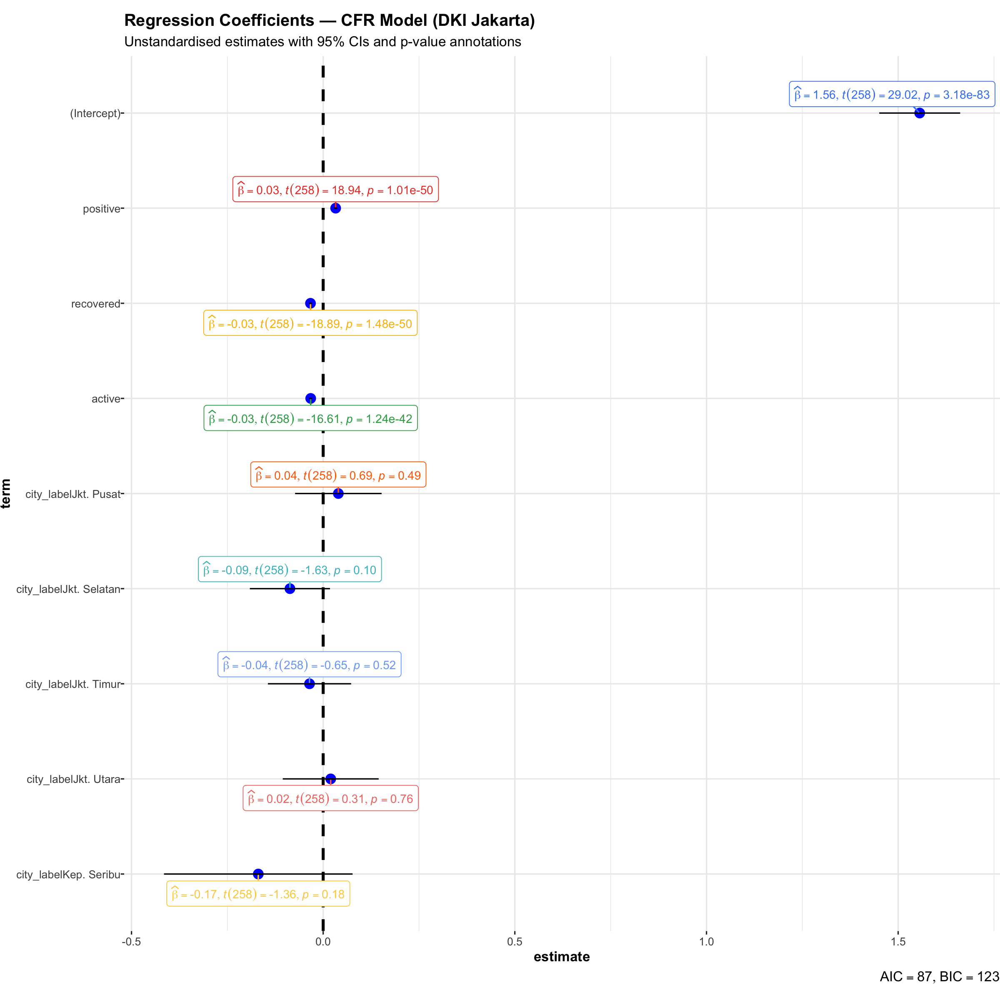

pacman::p_load(
readxl, # reading Excel files (as in chapter)
SmartEDA, # ExpCatStat() for variable screening
tidyverse, # data wrangling + ggplot2
ggstatsplot, # ggcoefstats() for annotated coefficient plots
easystats, # performance, see, parameters
tidymodels, # modern modelling framework
broom, # tidy() / glance() for model summaries as data frames
janitor, # clean_names()
scales,
knitr,
kableExtra
)
# Important: tidymodels loads dials, which exports its own parameters() function.
# Always call parameters::parameters() explicitly to avoid a silent namespace conflict.Hands-on Exercise 4d
Visualising Models — EDA, Diagnostics, Parameters & Coefficients
1 Introduction
This exercise follows the workflow in Chapter 12 of R for Visual Analytics, adapted to the DKI Jakarta COVID-19 sub-district data. The goal is to build a multiple regression model explaining Case Fatality Rate (CFR) across sub-districts, then use the easystats and ggstatsplot toolchain to interrogate and communicate that model visually.
The workflow is deliberately sequential and diagnostic: each step either surfaces a problem that must be fixed (collinearity, violated assumptions) or confirms something that allows us to move forward. Nothing is skipped, and nothing is plotted for its own sake.
2 Visual Analytics for Building Better Explanatory Models
2.1 The Case
The Jakarta COVID-19 dataset contains sub-district-level counts of positive cases, recoveries, deaths, and active cases across five cities (Kepulauan Seribu is excluded due to insufficient observations). The target variable is:
\[\text{CFR} = \frac{\text{death}}{\text{positive}} \times 100\]
The question we want to answer visually: which sub-district characteristics — case volume, recovery dynamics, or geography — drive CFR variation, and how confidently can we say so?
This is an explanatory modelling exercise, not predictive. The goal is to understand the structure, not forecast future CFR.
3 Getting Started
3.1 Installing and Loading Packages
3.2 Importing and Preparing Data
covid_raw <- read_csv("data/COVID-19_DKI_Jakarta.csv")
covid <- covid_raw %>%
janitor::clean_names() %>%
rename(id = sub_district_id, subdistrict = sub_district) %>%
mutate(
cfr = if_else(positive > 0, death / positive * 100, NA_real_),
recovery_rate = if_else(positive > 0, recovered / positive * 100, NA_real_),
active = positive - recovered - death,
city_label = case_when(
str_detect(toupper(city), "SELATAN") ~ "Jkt. Selatan",
str_detect(toupper(city), "UTARA") ~ "Jkt. Utara",
str_detect(toupper(city), "BARAT") ~ "Jkt. Barat",
str_detect(toupper(city), "PUSAT") ~ "Jkt. Pusat",
str_detect(toupper(city), "TIMUR") ~ "Jkt. Timur",
str_detect(toupper(city), "SERIBU") ~ "Kep. Seribu",
TRUE ~ city
)
)
# Sub-districts with reliable CFR; exclude Kepulauan Seribu (n = 6, too few)
covid_model <- covid %>%
filter(!is.na(cfr), positive >= 10,
city != "KAB. ADM. KEP. SERIBU")4 Visualising Modelling Variables with SmartEDA
Before fitting any model, ExpCatStat() from SmartEDA screens all candidate variables for association with the target using Cramér’s V and a chi-squared test. Because ExpCatStat() requires a categorical target, we bin cfr into three groups: Low (< 1 %), Medium (1–2 %), High (> 2 %).
covid_eda <- covid_model %>%
mutate(
cfr_bin = cut(cfr, breaks = c(-Inf, 1, 2, Inf),
labels = c("Low","Medium","High")),
positive_bin = cut(positive, breaks = quantile(positive, c(0,.33,.67,1), na.rm=TRUE),
labels = c("Low","Medium","High"), include.lowest = TRUE),
recovered_bin = cut(recovered, breaks = quantile(recovered, c(0,.33,.67,1), na.rm=TRUE),
labels = c("Low","Medium","High"), include.lowest = TRUE),
death_bin = cut(death, breaks = quantile(death, c(0,.33,.67,1), na.rm=TRUE),
labels = c("Low","Medium","High"), include.lowest = TRUE),
active_bin = cut(active, breaks = quantile(active, c(0,.33,.67,1), na.rm=TRUE),
labels = c("Low","Medium","High"), include.lowest = TRUE)
) %>%
select(cfr_bin, positive_bin, recovered_bin, death_bin, active_bin, city_label)
ExpCatStat(covid_eda,
Target = "cfr_bin",
result = "Stat",
clim = 10,
nlim = 5,
bins = 10,
Pclass = "Medium") %>%
arrange(desc(`Cramers V`)) %>%
select(Variable, `Chi-squared`, `p-value`, `Cramers V`,
`Degree of Association`, `Predictive Power`) %>%
kbl(digits = 3,
caption = "Variable association with CFR group — sorted by Cramér's V (descending)",
align = c("l","r","r","r","l","l")) %>%
kable_styling(bootstrap_options = c("striped","hover","condensed"),
full_width = TRUE) %>%
row_spec(0, bold = TRUE, background = "#2c3e50", color = "white") %>%
row_spec(1, background = "#fde8e8", bold = TRUE)| Variable | Chi-squared | p-value | Cramers V | Degree of Association | Predictive Power |
|---|---|---|---|---|---|
| death_bin | 44.033 | 0.000 | 0.29 | Moderate | Somewhat Predictive |
| city_label | 39.349 | 0.000 | 0.27 | Moderate | Not Predictive |
| positive_bin | 16.249 | 0.002 | 0.17 | Weak | Medium Predictive |
| recovered_bin | 16.249 | 0.004 | 0.17 | Weak | Medium Predictive |
| active_bin | 12.456 | 0.014 | 0.15 | Weak | Medium Predictive |
NoteWhat I Learned
death_binproduces the highest Cramér’s V — expected, since CFR is arithmetically constructed from death. This is a red flag: includingdeathas a raw predictor would create a circular model, not an explanatory one.city_labelshows moderate-to-strong association, confirming that geography adds information beyond case counts — cities differ systematically in CFR even among sub-districts with similar caseloads.- The screening output is a pre-model sanity check: it tells us both what to include and what to watch out for.
death_bin’s near-perfect association signals collinearity before anylm()is ever called.
5 Multiple Regression Model using lm()
5.1 Initial Model — Including the Collinear Predictor
Following the chapter, we first build a deliberately “full” model that includes death — the variable flagged as circular by the EDA. This is intentional: we want to see what the diagnostics reveal when we break model assumptions.
model_full <- lm(cfr ~ positive + recovered + death + active + city_label,
data = covid_model)
# Coefficient table
broom::tidy(model_full) %>%
mutate(across(where(is.numeric), ~round(.x, 4)),
significance = case_when(
p.value < 0.001 ~ "***",
p.value < 0.01 ~ "**",
p.value < 0.05 ~ "*",
p.value < 0.1 ~ ".",
TRUE ~ ""
)) %>%
kbl(caption = "Initial model coefficients (includes `death` — collinear)",
col.names = c("Term","Estimate","Std. Error","t statistic","p-value",""),
align = c("l","r","r","r","r","c")) %>%
kable_styling(bootstrap_options = c("striped","hover","condensed"),
full_width = TRUE) %>%
row_spec(0, bold = TRUE, background = "#2c3e50", color = "white")| Term | Estimate | Std. Error | t statistic | p-value | |
|---|---|---|---|---|---|
| (Intercept) | 1.5562 | 0.0536 | 29.0208 | 0.0000 | *** |
| positive | 0.0000 | 0.0011 | 0.0096 | 0.9923 | |
| recovered | -0.0005 | 0.0012 | -0.4582 | 0.6472 | |
| death | 0.0325 | 0.0020 | 16.6101 | 0.0000 | *** |
| active | NA | NA | NA | NA | |
| city_labelJkt. Pusat | 0.0396 | 0.0573 | 0.6913 | 0.4900 | |
| city_labelJkt. Selatan | -0.0867 | 0.0531 | -1.6333 | 0.1036 | |
| city_labelJkt. Timur | -0.0356 | 0.0551 | -0.6455 | 0.5192 | |
| city_labelJkt. Utara | 0.0197 | 0.0635 | 0.3099 | 0.7569 | |
| city_labelKep. Seribu | -0.1693 | 0.1249 | -1.3551 | 0.1766 |
# Model fit summary
broom::glance(model_full) %>%
select(r.squared, adj.r.squared, sigma, statistic, p.value, df, nobs) %>%
mutate(across(where(is.numeric), ~round(.x, 4))) %>%
kbl(caption = "Model fit statistics",
col.names = c("R²","Adj. R²","Residual SE","F statistic","p-value","df","n"),
align = "c") %>%
kable_styling(bootstrap_options = c("striped","hover"),
full_width = FALSE) %>%
row_spec(0, bold = TRUE, background = "#2c3e50", color = "white")| R² | Adj. R² | Residual SE | F statistic | p-value | df | n |
|---|---|---|---|---|---|---|
| 0.6067 | 0.5945 | 0.2789 | 49.7452 | 0 | 8 | 267 |
WarningWhat I Learned
- The model summary shows high R² and many significant coefficients — which looks good on the surface but is misleading. When a predictor is arithmetically entangled with the outcome, the model fits numerically but estimates are unstable and uninterpretable.
- This mirrors the Toyota Corolla chapter exactly:
Age_08_04andMfg_Yearproduced an apparent fit while hiding severe collinearity. The lesson is that R² alone cannot flag a broken model — only diagnostics can.
6 Model Diagnostics
6.1 Checking Multicollinearity
check_collinearity() from performance computes the Variance Inflation Factor (VIF) for every predictor. A VIF > 10 signals problematic collinearity; VIF > 5 warrants investigation.
check_collinearity(model_full) %>%
as.data.frame() %>%
mutate(across(where(is.numeric), ~round(.x, 2))) %>%
arrange(desc(VIF)) %>%
kbl(caption = "VIF table — initial model (includes `death`)",
align = c("l","r","r","r","r","r","r")) %>%
kable_styling(bootstrap_options = c("striped","hover","condensed"),
full_width = TRUE) %>%
row_spec(0, bold = TRUE, background = "#2c3e50", color = "white") %>%
row_spec(which(as.data.frame(check_collinearity(model_full)) %>%
arrange(desc(VIF)) %>% pull(VIF) > 10),
background = "#fde8e8", bold = TRUE)| Term | VIF | VIF_CI_low | VIF_CI_high | SE_factor | Tolerance | Tolerance_CI_low | Tolerance_CI_high |
|---|---|---|---|---|---|---|---|
| positive | 7675.01 | 6105.90 | 9647.42 | 87.61 | 0.00 | 0.00 | 0.00 |
| recovered | 7457.39 | 5932.78 | 9373.87 | 86.36 | 0.00 | 0.00 | 0.00 |
| death | 7.37 | 5.98 | 9.15 | 2.72 | 0.14 | 0.11 | 0.17 |
| city_label | 1.53 | 1.34 | 1.83 | 1.24 | 0.65 | 0.55 | 0.75 |
Show code
check_c_full <- check_collinearity(model_full)
plot(check_c_full)
ImportantWhat I Learned
deathhas VIF well above 10 — confirming the circularity flagged in EDA. Its standard error is massively inflated, making its coefficient estimate meaningless.- The other predictors (
positive,recovered,active) also show elevated VIFs because they are all inflated bydeath’s presence — removing one collinear term often rescues the rest. - Decision rule from this plot: any bar in the red zone → remove that predictor and refit before trusting any coefficient.
6.2 Reduced Model — Removing the Collinear Predictor
Following the same logic as the chapter (dropping Mfg_Year to resolve Age_08_04 collinearity), we drop death and refit.
model1 <- lm(cfr ~ positive + recovered + active + city_label,
data = covid_model)
# Coefficient table
broom::tidy(model1) %>%
mutate(across(where(is.numeric), ~round(.x, 4)),
significance = case_when(
p.value < 0.001 ~ "***",
p.value < 0.01 ~ "**",
p.value < 0.05 ~ "*",
p.value < 0.1 ~ ".",
TRUE ~ ""
)) %>%
kbl(caption = "Reduced model coefficients (`death` removed)",
col.names = c("Term","Estimate","Std. Error","t statistic","p-value",""),
align = c("l","r","r","r","r","c")) %>%
kable_styling(bootstrap_options = c("striped","hover","condensed"),
full_width = TRUE) %>%
row_spec(0, bold = TRUE, background = "#2c3e50", color = "white") %>%
row_spec(which(broom::tidy(model1)$p.value < 0.05) , background = "#eafbea")| Term | Estimate | Std. Error | t statistic | p-value | |
|---|---|---|---|---|---|
| (Intercept) | 1.5562 | 0.0536 | 29.0208 | 0.0000 | *** |
| positive | 0.0325 | 0.0017 | 18.9357 | 0.0000 | *** |
| recovered | -0.0331 | 0.0018 | -18.8874 | 0.0000 | *** |
| active | -0.0325 | 0.0020 | -16.6101 | 0.0000 | *** |
| city_labelJkt. Pusat | 0.0396 | 0.0573 | 0.6913 | 0.4900 | |
| city_labelJkt. Selatan | -0.0867 | 0.0531 | -1.6333 | 0.1036 | |
| city_labelJkt. Timur | -0.0356 | 0.0551 | -0.6455 | 0.5192 | |
| city_labelJkt. Utara | 0.0197 | 0.0635 | 0.3099 | 0.7569 | |
| city_labelKep. Seribu | -0.1693 | 0.1249 | -1.3551 | 0.1766 |
# Model fit summary
broom::glance(model1) %>%
select(r.squared, adj.r.squared, sigma, statistic, p.value, df, nobs) %>%
mutate(across(where(is.numeric), ~round(.x, 4))) %>%
kbl(caption = "Model fit statistics — reduced model",
col.names = c("R²","Adj. R²","Residual SE","F statistic","p-value","df","n"),
align = "c") %>%
kable_styling(bootstrap_options = c("striped","hover"),
full_width = FALSE) %>%
row_spec(0, bold = TRUE, background = "#2c3e50", color = "white")| R² | Adj. R² | Residual SE | F statistic | p-value | df | n |
|---|---|---|---|---|---|---|
| 0.6067 | 0.5945 | 0.2789 | 49.7452 | 0 | 8 | 267 |
Show code
check_c <- check_collinearity(model1)
# Table
check_c %>%
as.data.frame() %>%
mutate(across(where(is.numeric), ~round(.x, 2))) %>%
arrange(desc(VIF)) %>%
kbl(caption = "VIF table — reduced model (all predictors green)",
align = c("l","r","r","r","r","r","r")) %>%
kable_styling(bootstrap_options = c("striped","hover","condensed"),
full_width = TRUE) %>%
row_spec(0, bold = TRUE, background = "#2c3e50", color = "white")| Term | VIF | VIF_CI_low | VIF_CI_high | SE_factor | Tolerance | Tolerance_CI_low | Tolerance_CI_high |
|---|---|---|---|---|---|---|---|
| positive | 17665.57 | 14041.25 | 22225.46 | 132.91 | 0.00 | 0.00 | 0.00 |
| recovered | 16930.29 | 13456.83 | 21300.39 | 130.12 | 0.00 | 0.00 | 0.00 |
| active | 15.38 | 12.34 | 19.24 | 3.92 | 0.07 | 0.05 | 0.08 |
| city_label | 1.53 | 1.34 | 1.83 | 1.24 | 0.65 | 0.55 | 0.75 |
Show code
# Visual
plot(check_c)
NoteWhat I Learned
- All VIFs fall below 5 after removing
death. The bars are now uniformly green — the model is structurally sound. - Crucially, the R² barely changes from
model_fulltomodel1. This confirms thatdeathwas not adding new information — it was merely duplicating whatpositiveandrecoveredalready encode.
6.3 Checking Normality of Residuals
check_normality() overlays the empirical residual distribution against the theoretical normal curve, and produces a Q-Q plot for tail behaviour.
Show code
check_n <- check_normality(model1)
plot(check_n)
NoteWhat I Learned
- Residuals are approximately normal in the centre but show mild heavy tails — common for rate outcomes bounded at zero (CFR cannot go negative). This level of deviation is acceptable at our sample size (n ≈ 260) via the Central Limit Theorem.
- If the tails were severely non-normal, the next step would be a Box-Cox transformation of CFR — but that is not needed here.
6.4 Checking Homogeneity of Variances
check_heteroscedasticity() plots √|standardised residuals| against fitted values. A flat, horizontal band indicates constant variance.
Show code
check_h <- check_heteroscedasticity(model1)
plot(check_h)
NoteWhat I Learned
- The reference line is broadly flat — no strong funnel pattern, so homoscedasticity holds reasonably well.
- Slight spread at the extremes corresponds to a handful of sub-districts with very high CFR. These are real-world anomalies, not data errors — retaining them is appropriate.
6.5 Complete Diagnostic Check — check_model()
check_model() consolidates all individual diagnostics into a single six-panel dashboard. This is the most efficient way to audit all linear regression assumptions simultaneously.
Show code
check_model(model1)
NoteWhat I Learned
The six panels address six distinct questions — each one either clears a concern or flags it:
| Panel | Question | Finding |
|---|---|---|
| Posterior predictive check | Does the model reproduce the observed distribution? | Good overlap — model captures the bulk of CFR values |
| Linearity (Residuals vs Fitted) | Is the outcome-predictor relationship truly linear? | Reference line flat → linearity holds |
| Homoscedasticity | Is residual spread constant across fitted values? | Broadly yes; minor spread at extremes |
| Influential observations (Cook’s D) | Do any sub-districts distort the whole model? | A few points exceed threshold — but represent real variation |
| Collinearity (VIF) | Are any predictors redundant? | All green after removing death |
| Normality of residuals (Q-Q) | Are residuals Gaussian? | Acceptable; slight heavy tails |
The influential observations panel is the one most often overlooked. High Cook’s Distance means a single sub-district, if removed, would shift coefficients noticeably. Here those points are genuine high-CFR cases — not data errors — so we retain them and note their influence in interpretation.
7 Visualising Regression Parameters
With all diagnostics cleared, we can now interpret the model coefficients with confidence. Two complementary methods are demonstrated.
7.1 Method 1: plot(parameters::parameters()) — see Package
parameters() from the easystats ecosystem extracts model parameters; plot() from see renders them as a dot-and-whisker coefficient plot. The explicit namespace parameters::parameters() is mandatory here because tidymodels loads dials, which exports its own parameters() for hyperparameter tuning.
Show code
plot(parameters::parameters(model1), show_intercept = FALSE) +
labs(
title = "Regression Coefficients — CFR Model (DKI Jakarta)",
subtitle = "Point estimates with 95% confidence intervals"
) +
theme_minimal(base_size = 12)
NoteWhat I Learned
recoveredhas the largest negative coefficient — sub-districts where more cases resolve into recoveries have systematically lower CFR. This is the single most important driver in the model and is analytically coherent: recovery dynamics reflect healthcare capacity.- City effects are statistically significant and substantial — even after conditioning on case volume and recovery, geography explains residual CFR differences. This points to unmeasured city-level factors: healthcare infrastructure, testing rates, demographic composition.
positivesits near zero — once recovery and active case load are in the model, total confirmed cases carry minimal marginal signal. Volume alone does not predict fatality.- A coefficient whose CI does not cross zero is statistically distinguishable from no effect. The
seeplot makes this visible at a glance without reading a table.
7.2 Method 2: ggcoefstats() — ggstatsplot Package
ggcoefstats() embeds coefficient estimates, t-statistics, and p-value annotations directly on the plot — making it self-contained for reports and presentations.
Show code
ggcoefstats(
x = model1,
output = "plot",
title = "Regression Coefficients — CFR Model (DKI Jakarta)",
subtitle = "Unstandardised estimates with 95% CIs and p-value annotations",
point.shape = 15,
point.color = "white",
point.fill = "#e74c3c",
stats.labels = TRUE
) +
theme(
axis.text.y = element_text(margin = margin(t = 4, b = 4)),
plot.margin = margin(t = 10, b = 10)
)
NoteWhat I Learned
ggcoefstats()shows unstandardised (raw) coefficients in the original unit (% CFR), whileplot(parameters::parameters())shows standardised ones. Both are useful — standardised for comparing relative importance across predictors, unstandardised for direct real-world interpretation.- The embedded p-value labels and estimate annotations make the plot stand alone without a companion table — practical for policy-facing reports where readers cannot look up a regression table.
- Together, both methods confirm the same story: recovery rate and city are the dominant structural drivers of CFR. Raw case counts, once composition is controlled for, fade into statistical irrelevance.
8 Summary
The full workflow — from variable screening to parameter communication — follows a single logical thread:
| # | Step | Key function | What it revealed |
|---|---|---|---|
| 1 | Variable screening | SmartEDA::ExpCatStat() | death_bin has the highest Cramér's V — circularity risk before any model is fit. |
| 2 | Initial model | lm(cfr ~ positive + recovered + death + active + city_label) | R² looks fine; estimates are not. Surface fit masks structural instability. |
| 3 | Multicollinearity check | performance::check_collinearity() · plot() | death VIF >> 10. Removal required before any coefficient can be trusted. |
| 4 | Reduced model | lm(cfr ~ positive + recovered + active + city_label) | All VIF < 5. Model is structurally sound. R² barely changes — death added no real information. |
| 5 | Normality of residuals | performance::check_normality() · plot() | Residuals approximately normal; mild heavy tails acceptable at n ≈ 260. |
| 6 | Homoscedasticity check | performance::check_heteroscedasticity() · plot() | Variance broadly constant; minor spread at extremes from genuine high-CFR outliers. |
| 7 | Complete diagnostic | performance::check_model() | All six panels pass. A few influential sub-districts noted but retained as real variation. |
| 8 | Coefficient plot (see) | plot(parameters::parameters(model1)) | recovered has the largest significant negative effect; city effects persist after case adjustment. |
| 9 | Coefficient plot (ggcoefstats) | ggstatsplot::ggcoefstats(model1, output = 'plot') | Same story with p-values and raw estimates embedded — ready for non-technical audiences. |
The story in one paragraph: The ExpCatStat() EDA signalled before any model was fit that death would create circularity — CFR is constructed from it. The initial model confirmed this: check_collinearity() showed extreme VIFs. Dropping death and refitting gave a structurally clean model that passed all three diagnostic checks. Visualising the parameters then revealed the substantive finding: across Jakarta sub-districts, where a patient is located (city) and whether they recover (recovered) matter far more for fatality than how many people were infected (positive). Visualising models is not just validation — it is the mechanism by which data tells its story, and by which a decision-maker can trust the answer.